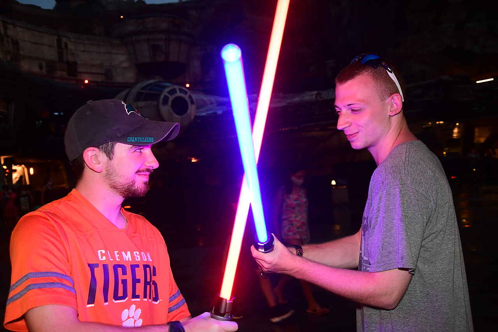

Origins
My love for Disney started when I was a child. I remember watching all the classic Disney movies with my family and friends. I was always fascinated by the magic and wonder that Disney brought to the screen and also to their parks. I would often travel to the parks as new and innovative rides would come out. I one day dream I can work for the Walt Disney Company and bring the magic to others.
My First Disney Trip:
My family took a Disney trip when I was about 6 years old and I feel in love with the company. I always admired the characters and the stories that Disney created. I remember meeting Pluto for the first time and I was so excited as he was my favorite character growing up. I would often dress up as Disney characters for Halloween.
Galaxy far far away...
Star Wars is a franchise that I have always loved. I remember watching the original trilogy with my dad and being amazed by the story and the characters. I have always been a fan of the Sith and the epic battles that they have with the rebels. This photo is from the first time I visited Galaxy's Edge at Disney World and experience the magic of Star Wars in person.
Favorite Star Wars Movie:
My favorite Star Wars movie is "Revenge of the Sith". I love the story of Anakin Skywalker and how he becomes Darth Vader. I believe Darth Vader is the best villain that was ever created in cinema! I also love the music and the visuals in this movie. It is a true masterpiece of cinema.
My Disney Favorites
Here are some of my favorite Disney movies and characters:
Favorite Movie: Revenge of the Sith
Favorite Hero: Baymax
Favorite Animated Villain: Hades
Disney Park Ranking
Here is my ranking of the Disney parks at Disney World:
- HollyWood Studios
- Epcot
- Magic Kingdom
- Animal Kingdom